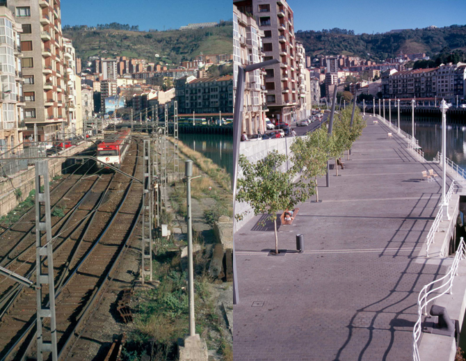

Bilbao’s Strategic Evolution:
The Metamorphosis of the Industrial City
by Ibon Areso
After the spectacular financial blossoming of Bilbao during the late 19th and early 20th centuries, the effects of the transformation of the world economy during the 1970s were especially detrimental to the former driving forces of the great industry: the iron-and-steel, shipbuilding, and textile sectors. This entire process brought about the collapse of the industrial town model on which metropolitan Bilbao was based.
In the face of a declining situation similar to that of other former industrial areas in Europe and other regions of the world, Bilbao had to commit itself to finding a new model for the future, while starting from the existing one.
In this essay, Ibon Areso, an architect, the former Mayor of Bilbao, and a key figure in the urban transformation of the city during the last thirty years, outlines the need for the transformation, the goals set forward by the public administration, and the challenges they faced. He places in context the key interventions in this remarkable transformation.
Introduction
Bilbao was founded in the year 1300 as a medieval villa or town by virtue of the privileges granted by the original founding document, the Carta Puebla. In 1511, when the trade and shipping office or Consulado was created, it became a trade outlet and subsequently, at the end of the nineteenth century, it was transformed into an industrial city covering its entire metropolitan area. The 1980s are a crucial time for the history of our city. Immersed in a change in the model of the city—from a stage of industrial decline to a new post-industrial metropolis— which forced us to face our future with a new and necessary urban configuration. For that reason, we can assert that this was more a thorough urban transformation than an evolution of the old city, a transformation that provided the springboard for the Bilbao of the future.
The Need for Change
The increasing volume of industry and trade that characterized Bilbao from its foundation until the end of the 1970s made it the financial and services capital of a considerable economic hinterland well beyond the boundaries of what is now the Autonomous Community of the Basque Country. The economic slump that emerged in 1975 pointed to a number of structural problems. These problems consisted of restrictive industrial production based on the traditional iron and steel industries, shipbuilding, and equipment goods, the sectors worst hit worldwide, and also on insufficient autonomy of the services sector, which was closely linked to the industrial development.
This situation had a considerable social and urban impact. There was a decay of the industrial system, high unemployment (between 25% and 30%, reaching 35% in certain areas of Greater Bilbao), degradation of the environment and the general city framework, emigration and stagnation of the population, and problems of social exclusion. All these effects were also present in other industrial cities such as Pittsburgh, Glasgow, Hamburg, Rotterdam, and Turin. Facing this situation, Bilbao was forced to initiate a comprehensive urban transformation capable of generating new job opportunities for the local population, which would be generated mainly in the tertiary sector.
Until 1800, manual labor was mostly found in agriculture, whereas nowadays agriculture accounts for only 2% to 4% of the workforce in the countries around us. From this point on, with the industrial revolution, the secondary sector became the basis of the economy and employment in the developed world.
Automation, robotization, and other forms of technological development inevitably lead to a considerable reduction in the workforce required by these industries. Nowadays, the combined efforts of the primary or agricultural sector, which has provided jobs for mankind for 4,000 years, and the manufacturing industry, which has been a source of employment for 200 years, only generate between 20% and 30% of the needed jobs. Trade, information, cultural and leisure activities, and other sectors currently undergoing development, will provide the remaining 70% of the jobs.
This does not mean that in Bilbao we wanted to discard our industrial tradition. Once technologically updated, it continues to produce wealth, albeit with less jobs, just as the 2% to 4% of the active population who work the land in the primary sector now produce much higher earnings from agriculture than 70% of the active population who were employed in agriculture 200 years ago.
Moreover, improving the living conditions of local people, besides creating employment and increasing their income, should also mean an improved habitat, offering better opportunities for residents in terms of leisure, culture, and environmental friendliness, among others.
From the point of view of urban planning, in industrial cities like ours these two concepts of urban quality and level of income have generally proven to be antagonistic, since practically all the cities were traditionally wealthy with high levels of employment, but also extremely environmentally deficient.
Today, environmental degradation and the deterioration of our habitat cause a loss of competitiveness at the international level, and thus surmounting this obstacle was a sine qua non condition to create new jobs from the development of the tertiary sector, and to attract the needed investment to make this possible. Cities are now competing with one another to attract new companies seeking alternative locations, and so a quality environment is inextricably linked to obtaining a higher level of income.
The New Metropolitan Bilbao
Having established the need to get past the industrial model—since its crisis is structural and not temporary—it was necessary to begin the transformation process into a post-industrial city, setting out the main guidelines for the future urban redevelopment, an ambitious process covering all the lower area of the Nervión River to configure a metropolis for the modern age. This urban renovation was considered taking into account physical concerns as well as social and economic issues, and developed based on the four main conceptual axes as listed below. The first two concepts relate slightly more to physical concerns or urban planning, whereas the third and fourth deal primarily with social and economic aspects.
External Accessibility and Internal Mobility for the Metropolis
Physical and intelligent communications are determining factors in attracting business investment. The expansion of the port facilities in Bilbao, a new airport, the Metro underground system, the work carried out on roads and railways, the future Intermodal Station, as well as the “information highways” created by new fiber optic wiring, are the result of an enormous and focused effort in this area.
Environmental and Urban Regeneration
The Bilbao metropolis developed with the environmental slavery typical of industrial areas. Nowadays, the quality of our environment is not only a basic requirement of the city for all its residents, but, as we have explained earlier, in Bilbao this was also essential for the development of the new economic activities of the future and to attract investment funds from exterior agents who demand increasingly more selective locations.
Improving the physical infrastructure, with specific emphasis placed on reducing pollution in the atmosphere, treating and cleaning waterways, managing industrial and urban waste, and expansion of parks and green-belt areas were the main interventions in order to achieve a metropolis with adequate environmental conditions.
The concept of urban regeneration has a number of aspects related to the previous point. The basic idea was to deal with the imbalances in the urban fabric caused by the economic development in order to foster a city that is better designed, friendlier, and that offered housing and other collective facilities. This urban improvement was essential to change the image of the city and satisfy the needs of its residents. This was necessary to boost the social enthusiasm required to develop new activities and to overcome the local pessimism and a lack of faith in the future that the closure of many businesses had generated.
Investment in Human Resources and Technological Transformation
The new economic drivers go hand in hand with knowledge, culture, and, in general, with immaterial aspects.
Training of the human resources within the industrial and services sectors was required if the city was to be competitive. Metropolitan Bilbao had to adjust its educational offerings to the new circumstances. Universities, professional training units, the relationship between training and employment, post-graduate training, and business policy with regard to human resources had to be a priority.
Values such as knowledge, creativity, dedication, and motivation must be taken up as a genuine challenge. The world of tomorrow is the world of knowledge.
This training must eventually transform our metropolis offering top-of-the-range services into a modern industrial region, reflecting the conviction that industry and services are inseparable within an economic context geared towards the twenty-first century. Industry creates wealth, and the services sector will provide many jobs.
Cultural Centrality
The boost of cultural activity is a factor that invigorates the city internally and also promotes it to the rest of world.
In contemporary societies, cultural activities, the arts, sport, and leisure constitute a genuine thermometer of collective vitality, determining the attractiveness of a city, contributing to its image abroad, and setting out the conditions for adding new activities.
I am convinced that, in the future, there will not be cities that are not simultaneously financially strong and culturally important. This double function is already true of large capital cities such as London, Paris, and New York. However, the cultural activity taking place in cities that are undisputed financial centers, such as Frankfurt, where seventeen new museums have opened in recent years, are an obvious example of this point.
In our case, in order to improve and promote the city of Bilbao we had to enhance the Museum of Fine Arts, the Arriaga Theater and the Campos Eliseos Theater, the Euskalduna Music and Conference Hall, the city libraries, the opera season, create golf courses, and turn the old Alhóndiga building into a new cultural, social and health venue. Undoubtedly, the key project in this area has been the Guggenheim Museum, having had an enormous international impact.
This process was effective, generating new jobs and reducing the above mentioned unemployment rate of 25%, to the rate of 8% prior to the global economic crisis that has elevated the unemployment rate to 12%.
The Guggenheim Museum Bilbao
Given the special interest that usually exists regarding the effect of culture in processes of urban regeneration, I will use as an example the effect achieved by the Guggenheim Museum which, without a doubt, has been the most symbolic and characteristic element in the commitment that Bilbao made to face its future and also the element that has contributed the most to make Bilbao internationally renowned.
The task faced by the Basque institutions was by no means simple. When Bilbao was chosen as the European location for the prestigious Guggenheim Museum in New York, first and foremost this conveyed the message to the Guggenheim Foundation that the proposal was serious and feasible, despite the image of decay that our town projected at the time. The selection of Bilbao was also the result of unsuccessful negotiations between the Foundation and other European cities that they felt were more appropriate, such as Salzburg and Venice.
However, the greatest problem was the large number of people in Bilbao who spoke out against the plan. They could not understand why the Basque institutions had to use so many resources to build a museum of modern art at a time of economic crisis, when it seemed obvious that public money should be used to shore up employment in stricken industries. This decision was considered a frivolity on the part of the public institutions promoting it.
A considerable amount of public money was indeed made available to industries experiencing difficulties but, in many cases, the loans and economic assistance would only sustain jobs artificially in industries that had no future, and were only effective when they were used to make the companies more competitive, replacing people with technology, thus increasing the unemployment figures.
In short, the local population failed to understand that the proposal for the museum drawn up by the Basque institutions contained, in addition to cultural concerns, a comprehensive economic component—in other words, culture was no longer to be understood as a mere “expense” as it had hitherto been seen—and was to be considered as economic “investment” in the future.
There was also considerable opposition from a large number of cultural groups whose economic assistance and grants were cut back following the alterations made to cultural allocations to finance the new museum.
Amid such a context of adverse opinion, when many people told us we were the biggest fools in Europe for accepting what nobody else wanted, that we were encouraging a “Coca-Cola culture” and American imperialism with our “MacGuggenheim,” we had to implement our strategic plan: to build a museum that could become the symbol of the city and incorporate Bilbao into the international art circuit present in the main cities of the world.
The truth of the matter is that this plan exceeded our wildest expectations, as can be seen from the figures below, and the success of the museum completely transformed the adverse opinions already mentioned.
Firstly, the feasibility survey carried out estimated that 400,000 visitors per year would be required to justify the planned investment of 132.22 million euros. We had some doubts as to whether we could reach this figure but, during the first year after its opening, the museum received 1,360,000 visitors, over three times the required figure. The average number of visitors per year, once the novelty wore off, is between 900,000 and 1,000,000.
The investment package of 132.22 million euros was broken down into three areas: 84.14 million euros to build the museum and landscaping around the general museum area; 36.6 million euros to purchase the artwork, which constituted the initial capital of the Guggenheim Museum Bilbao; and finally the remaining 12.2 million represented the contribution to become a member of the Foundation to ensure that their collections would rotate through Bilbao. This prevented the long period of consolidation typical for a new museum, achieving from the outset a level of quality similar to the Guggenheim on New York’s Fifth Avenue.
The economic results obtained are eloquent. The consultancy firm KPMG Peat Marwick carried out a survey, and their economic model shows the following figures:
During the first year operating the museum, from October 1997 to October 1998, the increase of the Gross Domestic Product (GDP) of the Autonomous Community of the Basque Country, resulting only from the museum, was of 144 million euros. There is no conventional non-speculative investment that can recover the invested capital in less than a year.
On the other hand, this increase in wealth generated an additional income for the Basque public funds which covered, in the first three years, the 84.14 million euros that cost the museum and, in five years, the total investment of 132.22 million.
The figures of the last study made in this respect, corresponding to the year 2006, reveal that, considering the direct, indirect, and induced effects, the activities of the Guggenheim Museum Bilbao had generated a wealth, until that year, of 211 million euros of GDP, which meant an additional increase for the Basque public funds of 29 million euros.
The above-mentioned increase in the wealth—according to the consultancy firm KPMG—implied, as well, the maintenance of 3,816 jobs during the first year, which increased during the year 2006 to 4,232.
As a reference, we can say that, in its heyday, the Euskalduna shipyard, located in the same area of the museum called Abandoibarra, offered, in the best of times, 4,000 jobs: 3,000 direct and 1,000 indirect through supporting industries. In its final years, the total number of jobs created at the shipyard was 2,300. For that reason, we can assert that the museum is able to maintain the same number of jobs that the shipyard held during its golden age (during the 1950s and 60s) and double the jobs offered during the shipyard’s final stage. The reduction of the number of jobs was a consequence of the crisis and also due to the technological advances.
These figures don’t take into account other factors such as the positive publicity that this action brought to the city, or its effect to gain other investments. If we consider all the articles written in newspapers, magazines, and TV features worldwide, and booked these as remunerated advertising, they alone would justify and amortize the resources employed.
These figures don’t take into account other factors such as the positive publicity that this action brought to the city, or its effect to gain other investments. If we consider all the articles written in newspapers, magazines, and TV features worldwide, and booked these as remunerated advertising, they alone would justify and amortize the resources employed.
Finally, we can claim that the Guggenheim operation has proved to be a fine investment and not an expense, as people now understand, and that investing in culture can help to generate a part of the economic resources and jobs we obtained from traditional industries in the past.
Other Aspects
In conclusion to this exploration of why and how the urban transformation of Bilbao took place, I want to focus on a number of aspects that have defined it:
One of the most significant milestones in the upgrading process was the transformation and recovery of the Nervión River. The coexistence of manufacturing activities and housing due to the artisanal nature of the former proved possible initially, but proved to be impossible during the industrial revolution, which introduced production facilities incompatible with the quality required for human habitat.
To a large extent, we could say that Bilbao was built with its back to the river. But it could also be said that, when the city was unburdened of its manufacturing activities to leave the port area available in the short and medium term, this provided an enormous potential. Since it runs through much of the consolidated urban fabric, we had to turn it into the structural element of the new city, bringing together leisure spaces, housing complexes, and tertiary activities and turning into its most emblematic symbol.
The new metropolis had to place much more emphasis on its internal transformation than on generating new development. The main objective was to renovate and upgrade the most degraded and obsolete areas that we inherited from the industrial crisis. In other words, turning “problematic areas” into “areas of opportunities.”
Close attention was paid to first-class urban planning and architecture, since they not only define the quality of life of residents of Bilbao, but also contribute to the projection of Bilbao overseas, thus attracting visitors and investment.
The development of a multi-disciplinary process such as the one described above required cooperation on the part of public administration, an institutional partnership. The city of Bilbao established a structure of cooperation between the institutions called BILBAO Ría 2000, a company whose shares were fully owned by the State Administration, the Basque Government, the Provincial Council of Biscay, and Bilbao City Council. It also required the gradual involvement of the private sector and, in our case, this was implemented by the Association for the Revitalization of Metropolitan Bilbao or Metrópoli 30.
Leadership is an essential feature of a process to bring about comprehensive transformation of a city. A clear diagnosis of the problem must be drawn up, and all necessary measures taken to solve it, even if the process is not initially understood by many local people. Risks are necessary, and if the wrong action has been taken, the local population will chastise those responsible with their votes; on the other hand, if the correct action has been taken they will acknowledge this in the next elections
Specific Areas of Intervention
Following this theoretical explanation, we should examine the specific results of the scheme, reviewing a series of images showcasing the before and after of the regeneration process. One inevitable question that arises after reviewing the work carried out is, “How was it all financed?”
It is evident that a project of this magnitude cannot be carried out using solely public money, which is subject to basic expenditures such as health, education, and other municipal services with no room for such extensive investment.
This forced the diversification of the funding structure. In the case of Bilbao, the above-mentioned investment of 132.22 million euros in the Guggenheim Museum, in addition to land provided by the City Council, was financed in equal parts by multi-annual budgets from the Basque Government and the Provincial Council of Biscay.
The Euskalduna Music and Conference Hall, that cost 85 million euros, was fully financed by the Provincial Council, and built on land also provided by the Bilbao City Council.
The expansion of the port of Bilbao, with an initial budget of 700 million euros, is being financed by the resources created by the port activity itself. Although this specific infrastructure is a general-interest port and thus depends directly on the Spanish Ministry for Economic Promotion, the state budget does not cover it. The state merely endorses the guarantees requested by the Bilbao Port Authority, and the port uses its activities to pay back the credit with interest.
The metro, with an investment of 1.1 billion euros, was financed by long-term debt.
The European FEDER infrastructure funding covered a further 12% of these two last activities.
Cleaning and sanitation work on the estuary, without prejudice to some public financial assistance, was paid for by an extraordinary charge to users over twenty-five years on top of their water bills. The total amount was around 900 million euros.
The Bilbao airport had become overstretched, and it required investment to build a new terminal, the control tower, and the extension of the runway, with a total cost of 190 million euros. This was financed by AENA, the state company handling Spanish airports and levying airport charges.
However, Bilbao’s real singularity lies in the ability that the city has demonstrated in obtaining resources from upgrading obsolete land amid the process of industrial dismantling. Much of the land formerly used by rail services, port, and certain industries was publicly owned.
The creation of the public company BILBAO Ría 2000 by the Spanish Government, the Basque Government, the Provincial Council of Biscay, Bilbao City Council, and subsequently Barakaldo City Council allowed the donation of land free of charge by those authorities, becoming one of the main driving forces behind the transformation of Bilbao.
BILBAO Ría 2000 handles much of the landscaping projects and rail reorganization, with a planned total budget of 901.7 million euros, of which 435.1 million euros have now been built. European funding accounted for about 90 million euros.
From the costs mentioned above, we can deduce that public investment in these main interventions reach a total amount of about 6 billion euros that, in turn, have generated a considerable amount of local and national private investment that I am unable to quantify.
Conclusion
To summarize, in Bilbao we were aware of the historical times in which we lived, and we knew that the decisions that we were taking were going to shape the future of our city. We agreed to assume our responsibilities, setting in motion the necessary mechanisms that would allow us to improve our future ranking on the international stage. After a number of years laying out our plans, acquiring the appropriate tools, concentrating our efforts and debating the various proposals, we are now living in exciting times indeed, where we can see some of our major projects completed, and others in progress, creating an atmosphere of optimism, progress, and hope for the future.
The efforts of the government during the last few years has created an important process of transformation and urban regeneration that has been recognized with multiple international awards. Among them we can highlight the 1st Prize I in the “Città D’acqua” Category of the 2004 International Architecture Exhibition of the Venice Biennale and the Lee Kuan Yew World City Prize, considered the Nobel Prize of cities, awarded by the city-state of Singapore in 2010.
After the process of transforming the industrial city into a post-industrial city, that is, from an ugly and polluted city to a friendly city, now it is necessary to drive the second urban transformation of Bilbao, a revolution that allows the generation of a new economy. Our second strategic plan for transformation needs to have the goal of transforming Bilbao from a friendly city to an intelligent city. Nowadays, in a global and competitive economy, we are seeing that the more creative the cities are, the more prosperous they are. That forces us to continue to reinvent ourselves to avoid the risk of entering a phase of stagnation.
For that reason, our new goal is to attract and implement the activities required in that new economy and needed to become competitive and access the network of innovative and creative cities. The exchange between art and technology is becoming the basis of our new economy and future prosperity.